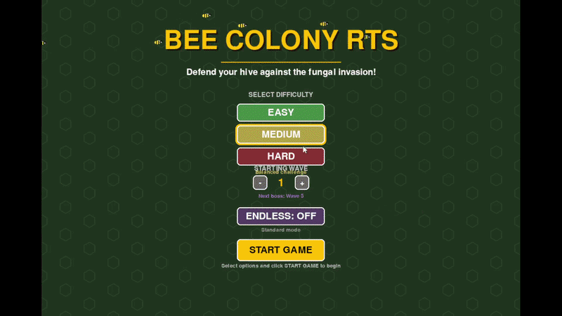
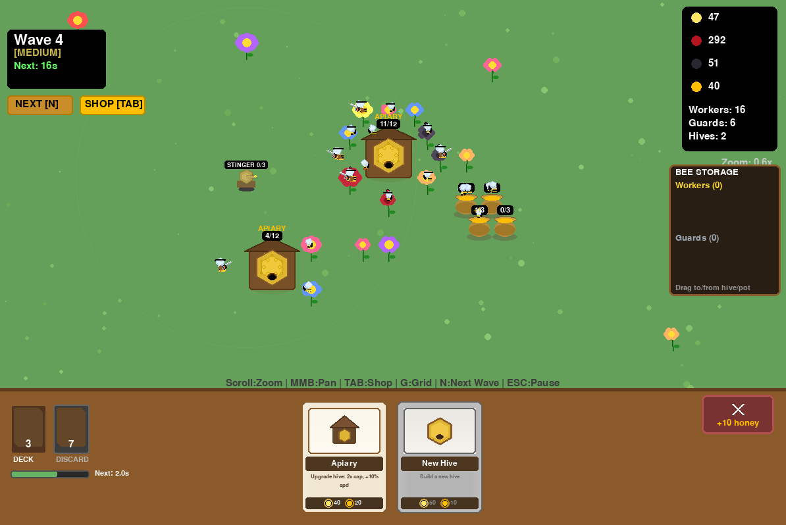
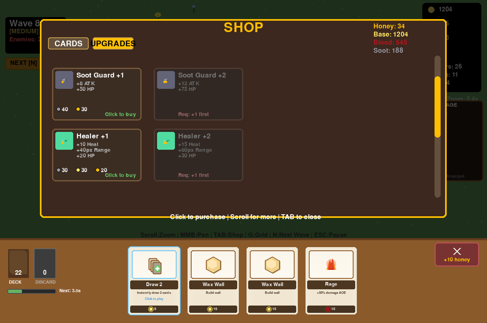
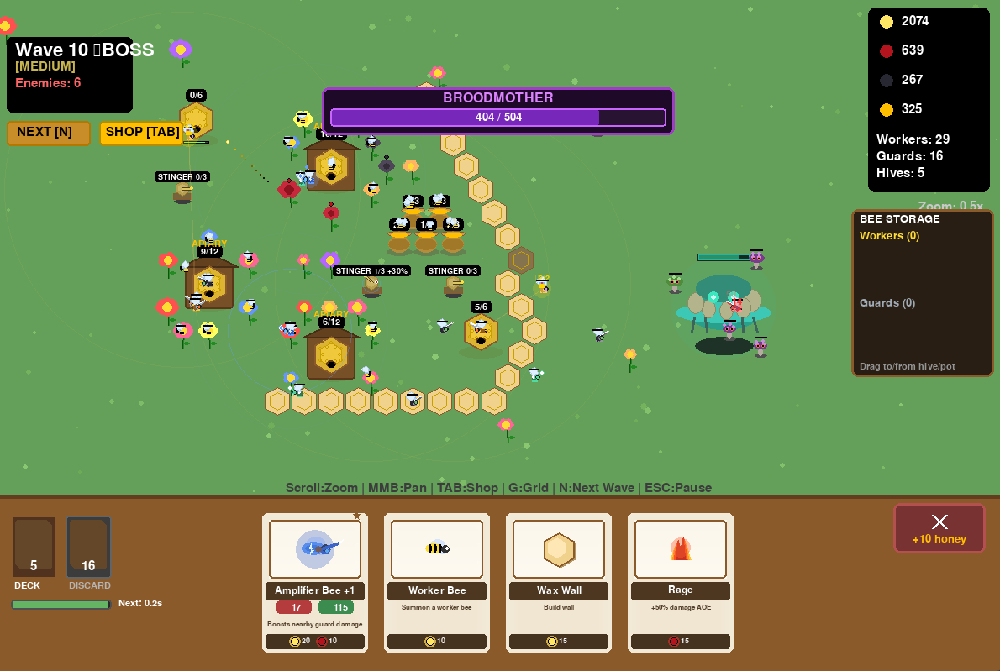

Colony is a game coded in Python which I also partially translated into Godot.
It is a Real Time Strategy, base defense, card game featuring magical bees.
The initial inspiration for Colony was to make a board game featuring bees which gathered magic from flowers.
This is the early game of colony, the player starts with three worker bees and a guard bee in a hive.
Worker bees fly to nearby flowers to gather pollen. The player has a conveyor belt of cards where they draw a card once every 5 seconds and discard any excess cards.
Dragging a card onto a tile instatiates it if you have enough resources.
The resources in the game are pollen, honey, blood, and soot. Pollen is gathered from flowers with a small chance of getting blood or soot.
A honey converter building can be constructed to assign bees to convert pollen to honey.
Initially, the blood and soot resources were meant to be corrupt resources which would give powerful in-game options, but would require the player to gradually devote increasing amounts of infrastructure to maintain.
That aspect of the game was never fully realized, and instead there are simple "Infuse" cards which allows the player to change the type of resource a flower produces from pollen to either blood or soot.

Early Game Footage
Footage of the very opening seconds of the game.

Early Economic Development
This image shows a more fleshed out early colony.
A second hive has been placed, the hives were upgraded into Apiaries which allow twice as many bees within them.
Flowers have been planted around the apiaries which worker bees harvest from. There is also a patch of honey converters manned with bees making honey.
Card Buying
Footage of buying cards from the shop.
Most cards cost honey and there is a second tab for purchasing upgrades for the bees. Cards which are bought go into the discard pile and are eventually shuffled into the main deck.
Cards available for purchase include:
Guard bees, the Blood guard with higher damage, the Soot guard with higher health, Amplification bees which increase damage around them, healer bees to repair nests and heal bees, and the Queen bee, which has an entourage of guard bees around her.
Spell cards, include a meteor card which causes a single AOE hit of damage, a poison puddle card dealing damage over time, and mind control card which turns the enemy against themselves.
There also more unique cards such as the Draw cards, a Wax wall card to help defend the colony, Stinger towers to enable guards to attack from a distance, among others.
card_buy.mp4.

Upgrades Tab
This image shows the upgrade tab which improves a bee's stats and gives them a new look.
Boss Encounter
Gameplay footage showing a boss encounter. This is one of two bosses in the game. Bosses occur once every five waves.
colony_boss.mp4.

Broodmother
This image shows the other boss, the Broodmother, who spawns minions over time. A wall of wax blocks off the boss from attacking the Colony's hives directly.